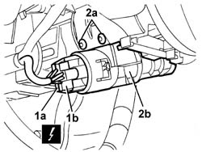

5520A12 IGNITION SWITCH ASSEMBLY - R R FOR VERSIONS WITH AIR BAG
- Path
- Procedures > 55 ELECTRICAL EQUIPMENT > 5520 ENGINE STARTING > 5520A IGNITION SWITCH > 5520A12 IGNITION SWITCH ASSEMBLY - R R FOR VERSIONS WITH AIR BAG
- Kind
- repair procedure (removal / refitting; the operation number is the code)
- Applies to
- engines: 2.0 JTS, 3.2 V6, 1.9 JTD 16V; all production periods
- Interactive page
- https://sloeber94.github.io/elrnDB-aGt/en/#/125001617
Applies to: engines: 2.0 JTS, 3.2 V6, 1.9 JTD 16V; all production periods
 Removing
Removing
 Refitting
RefittingOp. 5580E08 AERIAL FOR ALPHA CODE - R R
1. Disconnect the electrical connections (1a, 1b) from the ignition switch.
Name | Connector | |
|---|---|---|
1a | Ignition switch | See H1A IGNITION SWITCH ( FRONT ) |
Name | Connector | |
|---|---|---|
1b | Ignition switch | See H1B IGNITION SWITCH ( FACIA ) |
2. Use a drift and undo the headless bolts (2a); remove the ignition switch (2b).

Applies to: engines: 2.0 JTS, 3.2 V6, 1.9 JTD 16V; all production periods
Refitting
RemovingCheck that the ignition switch is not damaged.
Position the ignition switch.
Screw in the two new special bolts until the head breaks.
Connect the electrical connections .
Op. 5580E08 AERIAL FOR ALPHA CODE - R R
Check the operation of the electrical system and the steering lock.